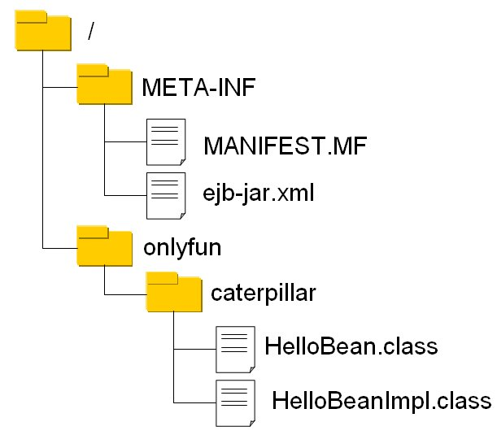

| 基本上，您會使用整合開發工具（Integrated Developement Environment, IDE）來開發EJB元件，部署用的EJB-JAR檔案，可以利用IDE工具來產生，在這邊，則稍微說明一下EJB-JAR檔案的內容架構。 以 第 一個 Session Bean（單機客戶端） 為例，一個EJB-JAR檔案基本上會包括以下的內容：  主要是了解到部署描述檔（Deployment Descriptor, DD）會放在META-INF之中，像是這邊的ejb-jar.xml，以及編譯好的類別檔案置放之位置，是在JAR根目錄下包括套件（package）資料夾。 ejb-jar.xml並非必要，您可以使用Annotation來設定部署時的 相關資訊，也可以使用ejb-jar.xml來撰寫這些資訊，或者是覆蓋Annotation的設定。 例如，您可以撰寫一個HelloBean介面定義，而不使用Annotation：
package onlyfun.caterpillar; 而實作類別如下：
package onlyfun.caterpillar; 接著撰寫一個ejb-jar.xml
<?xml version="1.0" encoding="UTF-8"?> 基本上，這就是 第 一個 Session Bean（單機客戶端） 中的Stateless Session Bean的定義，只是改為XML來定義。 若要手動建立JAR檔案，您可以建一個目錄，例如build目錄，該目錄下建立META-INF，並將ejb-jar.xml放到其中，將 HelloBean.class、HelloBeanImpl.class放到build下onlyfun的caterpillar目錄中，然後在 build目錄中下指令： jar cvf ../dist/HelloEJB.jar ./*
如此dist目錄就會出現HelloEJB.jar，接著就可以進行部署了，基本上，Annotation可設定的項目，都會有對應的XML設定方式，您可以查閱 JSR 220 第19章有關於部署描述檔的說明。 |